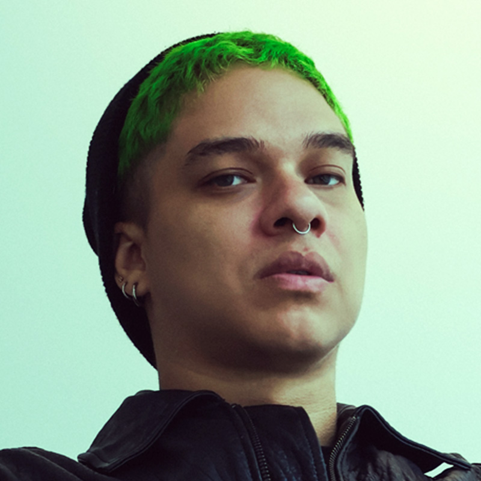

ALOCATE · DJ y productor de Hardtechno y Hardstyle · Birongo Caracas Venezuela

Geo
Geo es un DJ y curador sonoro venezolano que se ha consolidado como una de las figuras más vanguardistas de la escena alternativa y nocturna de Caracas. Es el principal creador y organizador de M4LA (o MALA), un proyecto de eventos y club nocturno que destaca por su carácter inclusivo y su propuesta artística rompedora. A través de su trabajo en la cabina y la producción, Geo integra de forma activa su faceta como defensor de derechos humanos, concibiendo la música y el arte performático como herramientas fundamentales para tejer comunidad y crear espacios seguros para la diversidad.
Su identidad musical se caracteriza por romper barreras de género, logrando conectar con fluidez la intensidad del techno electrónico con ritmos latinos periféricos y el pop contemporáneo. Esta versatilidad le permite construir atmósferas que van desde sets electrónicos intensos hasta momentos de alta energía colectiva con íconos del pop y ritmos urbanos. En Caracas, sus eventos han tomado espacios clave de la movida underground y cultural como ZZBAR, Chapis Club y el showroom de Viceversa, colaborando estrechamente con colectivos de arte drag y performance para redefinir la experiencia de clubbing en la ciudad.
Geo es un DJ y curador sonoro venezolano que se ha consolidado como una de las figuras más vanguardistas de la escena alternativa y nocturna de Caracas. Es el principal creador y organizador de M4LA (o MALA), un proyecto de eventos y club nocturno que destaca por su carácter inclusivo y su propuesta artística rompedora. A través de su trabajo en la cabina y la producción, Geo integra de forma activa su faceta como defensor de derechos humanos, concibiendo la música y el arte performático como herramientas fundamentales para tejer comunidad y crear espacios seguros para la diversidad.